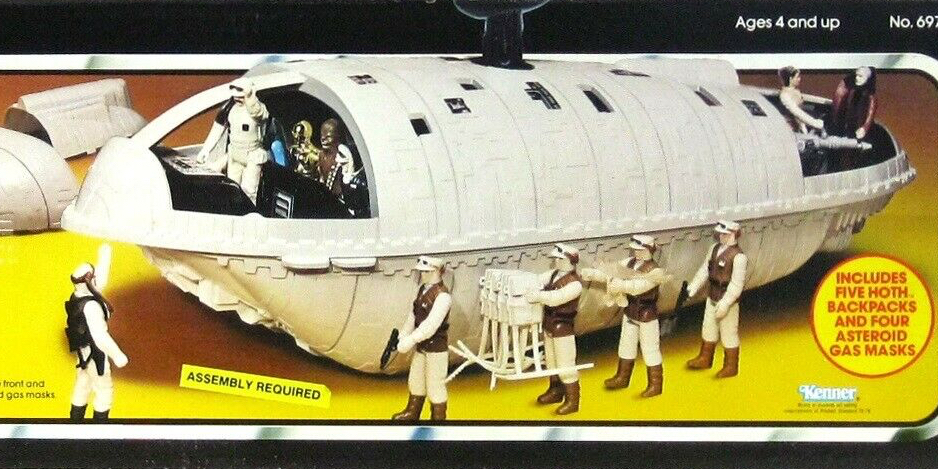

Millennium Falcon

Embarque na lendária Millennium Falcon, a nave mais rápida da galáxia! Com Han Solo e Chewbacca no comando, ela é famosa por suas incríveis escapadas.
X-Wing
Conheça o X-Wing, a nave de combate favorita dos rebeldes! Com sua impressionante manobrabilidade e poder de fogo, ela é uma das maiores ameaças para o Império.
TIE Fighter

Explore o TIE Fighter, a nave do Império que domina os céus com sua velocidade e agilidade. Compacta e letal, ela representa o poder militar do Império Galáctico.
Slave I

Conheça a Slave I, a nave temida de Boba Fett. Com seu design único e armamento pesado, ela é uma das mais mortais caçadoras de recompensas da galáxia.
Imperial Shuttle
A Imperial Shuttle é uma nave de transporte usada pelo Império, projetada para missões secretas. Com um design triangular e capacidade de carga impressionante, ela é vital para a frota imperial.
Star Destroyer
O Star Destroyer é uma gigantesca nave de guerra do Império, famosa por seu tamanho imponente e poder de fogo esmagador. Usada para combater rebeldes e manter a ordem galáctica.
Rebel Transport
O Rebel Transport é uma nave de transporte usada pelos rebeldes para levar tropas e suprimentos. Compacta, mas resistente, é crucial para as missões secretas do movimento rebelde.
Death Star

A Death Star é a arma de destruição em massa do Império. Uma estação espacial imensa capaz de destruir planetas inteiros com um único disparo de seu superlaser.
AT-AT Walker
O AT-AT Walker é um imenso veículo de combate do Império, conhecido por sua aparência imponente e força de fogo devastadora. Usado em batalhas terrestres contra as forças rebeldes.
Y-Wing
O Y-Wing é uma nave de bombardeio usada pelos rebeldes. Resistente e confiável, ela desempenha um papel crucial em ataques contra alvos fortemente defendidos.